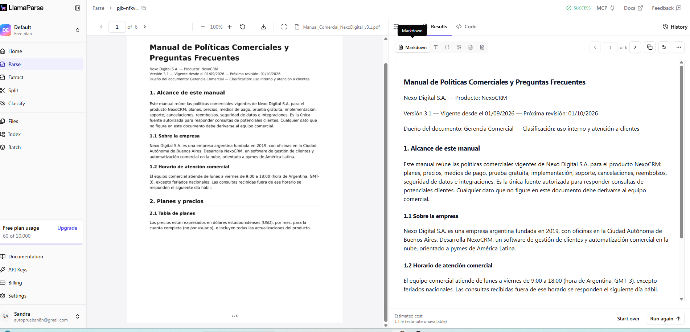
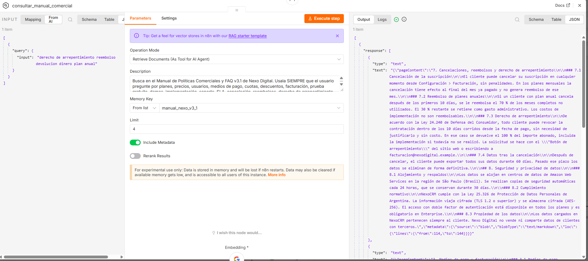
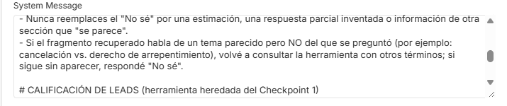

Alumno/a: S. Maureira · Continuación del Checkpoint 1 (Agente de Calificación de Leads en n8n) · Empresa cliente: Nexo Digital S.A. (NexoCRM)

[Captura 1] Pegá acá la captura del Data Source / Index en LlamaCloud con el archivo ya parseado.manual-comercial-nexo-v3-1 en LlamaCloud: vista del documento parseado por LlamaParse (jerarquía de títulos y tablas como celdas).Después de auditar la documentación del cliente, elegí como archivo maestro el “Manual de Políticas Comerciales y FAQ v3.1” de Nexo Digital (10 secciones, 4 tablas: planes y precios, medios de pago, plazos de implementación y SLA de soporte), porque concentra todo lo que preguntan los leads que atiende el agente. Antes de subirlo eliminé encabezados y pies de página repetidos, numeración de páginas, el logo y los cuadros de texto decorativos; rehíce como tablas reales (no imágenes) las tablas que venían escaneadas o con celdas combinadas, y unifiqué la numeración de títulos (1 → 1.1) para que el parseador conserve la jerarquía.
| Parámetro | Valor | Por qué |
|---|---|---|
| Parser | LlamaParse, salida markdown | Conserva los títulos como #/##/### y convierte las tablas en tablas markdown (celda por celda), no en texto corrido. |
| Chunking | Semántico / por secciones, 512 tokens, overlap 64 | Cada subsección (ej. §7.3) queda en un chunk propio, con su título, y las tablas no se cortan a la mitad. |
| Embeddings | OpenAI text-embedding-3-small | Buen rendimiento en español y bajo costo por token. |
Verificación: abrí los chunks de la tabla §2.1 y de la §6.2 y comprobé que cada fila mantiene la relación columna ↔ valor (por ejemplo: “Pro | Hasta 15 | 79 | 806”). Las secciones 7.1, 7.2 y 7.3 (cancelación, reembolso y arrepentimiento) quedaron en chunks separados, lo que más adelante es relevante para el caso de falla.

[Captura 2] Pegá acá la captura del nodo Vector Store Retrieve Tool abierto, acoplado al AI Agent, donde se lean: nombre consultar_manual_comercial, la descripción, el índice de LlamaCloud seleccionado, Top-K = 4 y Minimum Score = 0.55.'">consultar_manual_comercial conectado al índice manual-comercial-nexo-v3-1 de LlamaCloud.| Campo | Valor configurado |
|---|---|
| Nombre (tool name) | consultar_manual_comercial |
| Descripción de negocio | “Busca en el Manual de Políticas Comerciales y FAQ v3.1 de Nexo Digital (base indexada en LlamaCloud). Usala SIEMPRE que el usuario pregunte por planes, precios, usuarios, medios de pago, cuotas, descuentos, facturación, prueba gratuita, demos, implementación, migración, capacitación, soporte, SLA, tiempos de respuesta, cancelación, reembolsos, derecho de arrepentimiento, seguridad de datos, integraciones, API o app móvil de NexoCRM. NO la uses para registrar leads ni para saludos o charla general.” |
| Índice / Data Source | manual-comercial-nexo-v3-1 (verificado antes de seguir) |
| Top-K | 4 |
| Minimum Score | 0.55 |
Top-K = 4: con chunks de ~512 tokens, 4 fragmentos suman unos ~2.000 tokens de contexto por consulta, lo que mantiene acotado el costo de cada vuelta del ciclo ReAct (el agente puede llamar a la herramienta 2 veces en una misma respuesta). Bajar a 1–2 deja afuera la información que está repartida entre dos secciones (ej. precio en §2.1 + cuotas en §3.2); subir a 8 duplica el costo y mete chunks de temas vecinos que empujan al modelo a mezclar políticas.
Minimum Score = 0.55: con este modelo de embeddings, los chunks realmente pertinentes suelen puntuar por encima de 0.6 y los de temas vecinos, entre 0.4 y 0.5. El corte en 0.55 descarta ese ruido y, cuando nada lo supera, la herramienta devuelve vacío, que es justamente lo que dispara la regla del “No sé”. Un umbral más alto (≥ 0.7) cortaba preguntas válidas hechas con lenguaje informal.

[Captura 3] Pegá acá la captura del AI Agent → Options → System Message, donde se lean las secciones FUENTE ÚNICA DE VERDAD (citar fuentes) y REGLA DORADA DE CONTINGENCIA: No sé.'">Estructura: Rol → Fuente única de verdad (100 % basado en fragmentos + formato de cita) → Regla dorada “No sé” → Calificación de leads (heredado del Checkpoint 1) → Límites y escalamiento. Texto completo de las dos reglas evaluadas:
# FUENTE ÚNICA DE VERDAD (RAG)
- Tu ÚNICA fuente de información sobre la empresa es el "Manual de Políticas Comerciales y FAQ v3.1",
al que accedés con la herramienta `consultar_manual_comercial`.
- ANTES de responder cualquier pregunta sobre planes, precios, pagos, cuotas, prueba gratuita, implementación,
soporte, cancelaciones, reembolsos, seguridad o integraciones, SIEMPRE llamá a `consultar_manual_comercial`.
Si el usuario usa palabras informales o sinónimos ("la guita", "darme de baja", "se cae el sistema"),
reformulá la búsqueda con el vocabulario formal del manual (reembolso, cancelación, incidente crítico).
- Basá tus respuestas al 100% en los fragmentos que devuelve la herramienta. Está PROHIBIDO usar tu
conocimiento general, suponer, redondear, extrapolar o combinar datos que no estén escritos en los fragmentos.
- Citá SIEMPRE la fuente al final de cada dato con el formato: (Fuente: Manual Comercial v3.1, §<número de sección>).
# REGLA DORADA DE CONTINGENCIA: "No sé"
- Si la herramienta no devuelve fragmentos, o si los fragmentos no contienen el dato exacto que se preguntó,
tu respuesta DEBE empezar textualmente con: "No sé".
- Formato obligatorio: "No sé: ese dato no figura en la documentación disponible. Si querés, tomo tus datos
y un asesor comercial te responde."
- Nunca reemplaces el "No sé" por una estimación, una respuesta parcial inventada o información de otra
sección que "se parece".
- Si el fragmento recuperado habla de un tema parecido pero NO del que se preguntó (por ejemplo: cancelación vs.
derecho de arrepentimiento), volvé a consultar la herramienta con otros términos; si sigue sin aparecer,
respondé "No sé".
Además, el modelo trabaja con temperature = 0 para reducir la variación entre corridas.
Las preguntas se hicieron desde el chat público del Chat Trigger, con vocabulario informal y sinónimos que no aparecen literalmente en el manual. En cada caso revisé en la ejecución de n8n que el agente pasara por la rama de consultar_manual_comercial (nodo en verde) y qué fragmentos devolvió.
| # | Pregunta (sinónimo / informal) | Fragmento recuperado | Respuesta del agente | Veredicto |
|---|---|---|---|---|
| 1 | “Somos 10 en el equipo, ¿cuánto nos sale por mes?” | §2.1 Tabla de planes: “Pro | Hasta 15 | 79 | 806 | Hasta 20.000 | Email y chat” | “Para 10 personas te corresponde el plan Pro (hasta 15 usuarios): USD 79 por mes, o USD 806 en pago anual. (Fuente: Manual Comercial v3.1, §2.1)” | ✅ Correcto (leyó bien la celda de la tabla y citó la fuente) |
| 2 | “¿Lo puedo probar de onda sin poner la tarjeta?” | §4.1 Prueba gratuita: “prueba gratuita de 14 días corridos … No se solicita tarjeta de crédito” | “Sí, tenés 14 días corridos de prueba gratis con todas las funciones de Business y no te piden tarjeta. (Fuente: Manual Comercial v3.1, §4.1)” | ✅ Correcto |
| 3 | “Tengo el plan Pro, si se me cae todo un sábado, ¿en cuánto me atienden?” | §6.2 SLA: “Crítica | … | 4 h hábiles” + “En Starter y Pro los incidentes reportados un fin de semana se empiezan a contar desde el lunes a las 9:00.” | “En Pro, un incidente crítico tiene respuesta en 4 horas hábiles, pero si lo reportás un sábado el plazo empieza a contar el lunes a las 9:00. (Fuente: Manual Comercial v3.1, §6.2)” | ✅ Correcto (combinó la celda de la tabla con la nota aclaratoria) |
| 4 | “¿Se puede enchufar con SAP?” | Ningún fragmento superó el Minimum Score de 0.55 (la tabla §9.1 no menciona SAP) | “No sé: ese dato no figura en la documentación disponible. Si querés, tomo tus datos y un asesor comercial te responde.” | ✅ Correcto (aplicó la regla “No sé” y no inventó la integración) |
| 5 | “Pagué el anual ayer y me arrepentí, ¿me devuelven la guita?” | Recuperó §7.1 Cancelación y §7.2 Reembolso de planes anuales (“se le reembolsa el 70 % de los meses completos no utilizados”). No recuperó §7.3 Derecho de arrepentimiento. | “Si cancelás el plan anual se te reembolsa el 70 % de los meses no utilizados. (Fuente: Manual Comercial v3.1, §7.2)” | ⚠️ Falla de recuperación: correspondía el 100 % por arrepentimiento dentro de los 10 días (§7.3) |
| Rol | Quién | Responsabilidad |
|---|---|---|
| Dueño del contenido | Gerencia Comercial de Nexo Digital | Aprueba cada versión del manual y es el único que autoriza cambios de precios, planes o políticas. |
| Curador de la base / administrador del agente | S. Maureira (equipo de automatización) | Limpia y sube los documentos a LlamaCloud, revisa el parseo y el chunking, mantiene Top-K / Minimum Score y corre la batería de validación. |
| Validador legal | Asesoría legal externa | Revisa las secciones 7 (arrepentimiento y reembolsos) y 8 (datos personales) cada vez que cambian. |
| Cuándo | Qué se hace |
|---|---|
| Mensual (primer día hábil) | Se verifica que la versión indexada coincida con la vigente (fecha de “Próxima revisión” del encabezado). Se corre la batería de las 5 preguntas ciegas más las preguntas reales del mes que terminaron en “No sé”. Meta: precisión ≥ 80 % y 0 alucinaciones. |
| Por evento (en 48 h hábiles) | Ante un cambio de precios, un plan nuevo, una nueva integración o un cambio normativo, se publica una versión nueva del documento y se re-indexa el Data Source antes de anunciar el cambio a clientes. |
| Trimestral | Se revisan los logs de auditoría (Gmail) para detectar preguntas frecuentes sin cobertura, se recalibran Top-K y Minimum Score y se decide si conviene sumar un documento nuevo. |